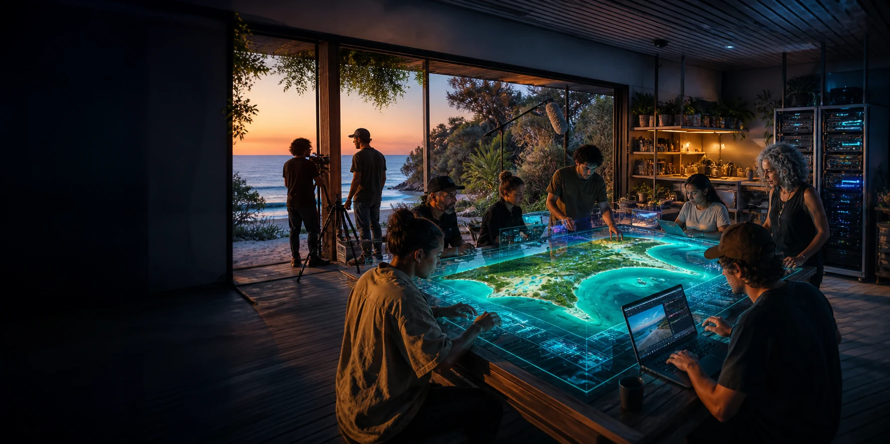

Local purpose
The first question is not what the machine does. It is what people around it find worth doing together.

A working exploration of local compute on Minjerribah: useful every day, shaped through Indigenous and non-Indigenous relationships, and connected beyond the island only on locally chosen terms.
Between a laptop and a hyperscale data centre sits a useful middle scale: one serious rack of local computing equipment, surrounded by people, skills, relationships and everyday reasons to use it.
Working hardware reference
One NVIDIA GB200 NVL72-class rack. The brand and generation are examples, not a purchase decision.
Working place reference
Dunwich on Minjerribah. The place is a study context, not a claim of site control or approval.
Working social reference
Indigenous and non-Indigenous friends interested in exploring collaboration. No person or group is presented as endorsing this website.
The first question is not what the machine does. It is what people around it find worth doing together.
Permission, custody, attribution, human-only knowledge and the choice not to digitise remain visible parts of the design.
Media, learning, local models, environmental observation, digital twins and disruption readiness give the rack everyday relevance.
A node keeps its own centre. Links to other places support exchange without turning difference into one central system.
The phrase describes a place where computation sits inside living relationships rather than above them.
Some material may be public. Some may be shared for one purpose. Some may stay within a family, organisation or cultural boundary. Some may remain human-only. The architecture begins by keeping those distinctions intact.
Explore cultural collaborationEach page stays close to the single-node question.
What sits inside the reference rack, and what still sits outside it.
↗ Dunwich contextA place study grounded in island life, without claiming a site or approval.
↗ Cultural collaborationRelationship, permission and separate knowledge layers before datasets.
↗ Practical usesWorkloads that give local compute ordinary value as well as disruption value.
↗ Island digital twinA layered model that shows provenance, permissions and uncertainty.
↗ Co-op layerShared employment, training, equipment and services around the node.
↗The 2026 Project Atlas shows the surrounding network of ideas built with agents. This website does not attempt to retell that network. It keeps one practical thread in focus.